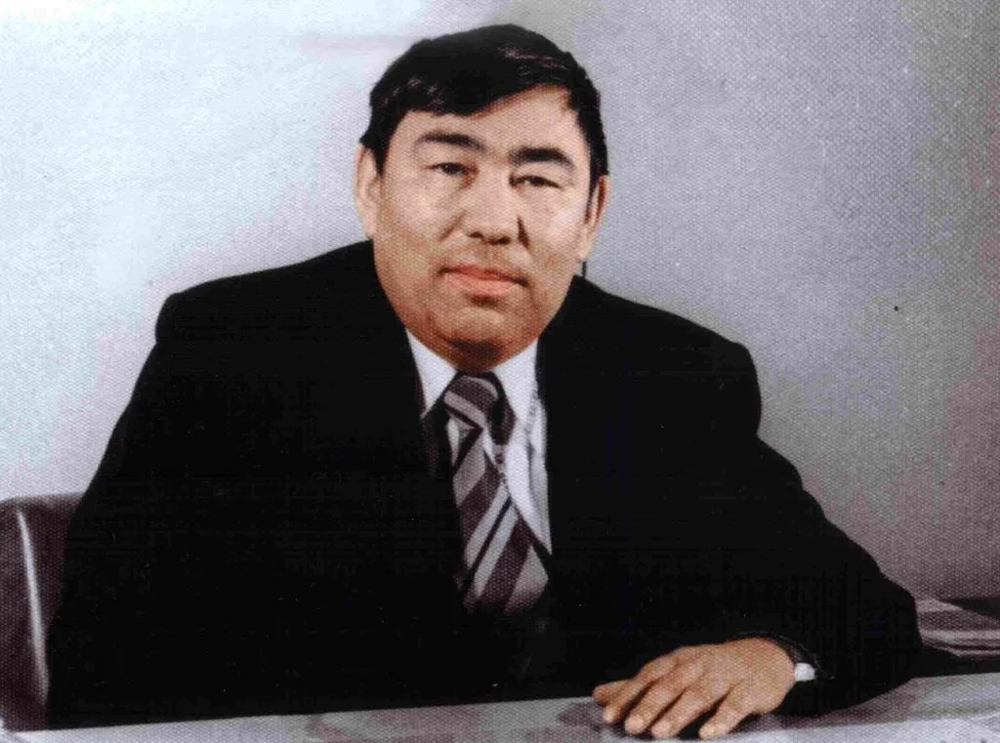
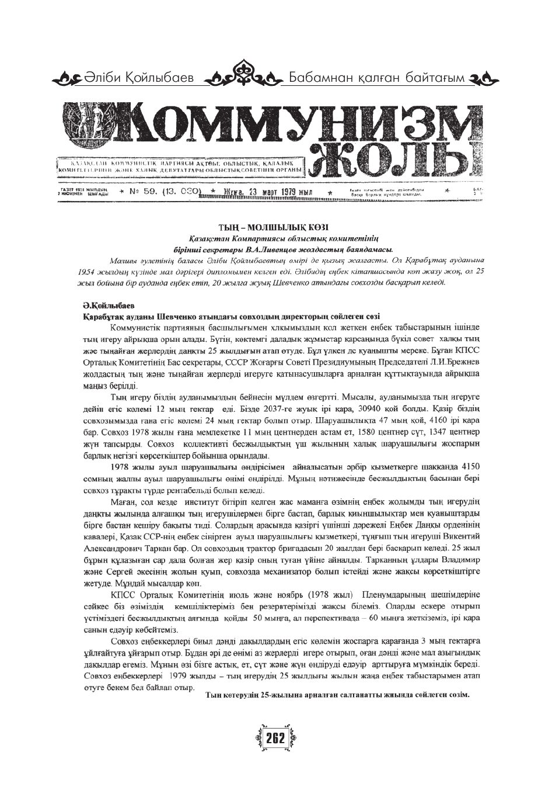
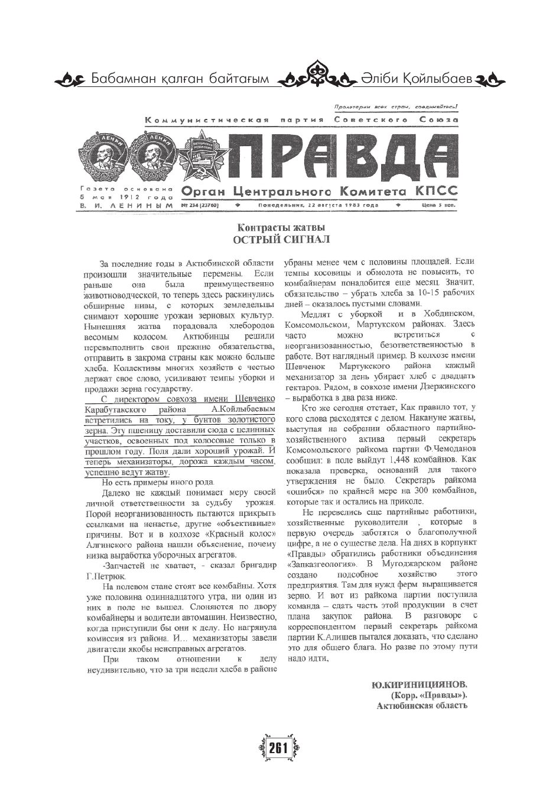
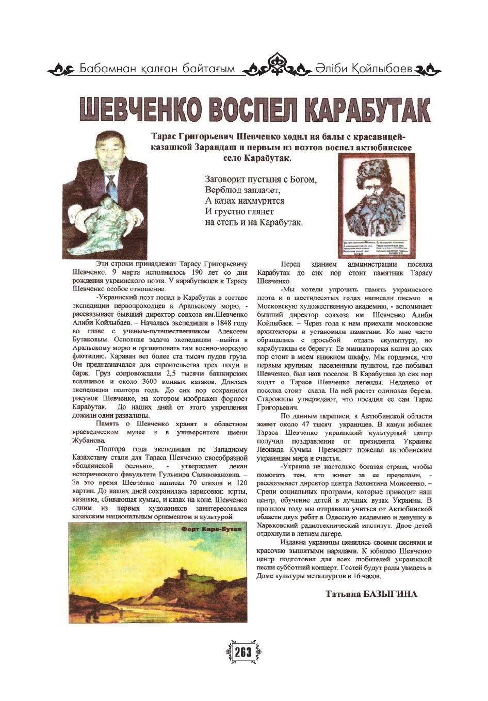

1932Шабаған
Ырғыз жағасында дүниеге келді
Әліби 1932 жылы Ырғыз ауданының Шабаған ауылында, ата-бабалары ерте заманнан қоныстанған ескі жұртта дүниеге келді. Балалық шағы аштық отызыншы жылдар мен соғыс жылдарына тұс келді.
Ырғыз · Шабаған · Қарабұтақ
Әліби Қойлыбайұлы Қойлыбаев
1932—2018
Шабаған ауылындағы тарышының ұлы, мал дәрігері, Шевченко атындағы кеңшардың директоры, Қазақ КСР Жоғарғы Кеңесінің депутаты. Қырық үш жылын Қарабұтаққа арнады, ал жасы ұлғайғанда ұрпақтары қандай жерде өмір сүріп жатқанын білсін деп туған өлкесі туралы кітап жазды.

Бабамнан қалған байтағым
«Бабамнан қалған байтағым». Қарабұтақ пен Ырғыз өңірі туралы кітабын ол осылай атады. Кітап үш рет басылды: 2003, 2007 және 2012 жылдары.
Деректі фильм
Әкесінің өмірі туралы оның балалары баяндайтын, Әліби атаның өз естеліктері кірген телевизиялық фильм. 14 минут. Қазақша және орысша субтитрлер.
Қазақша мәтін дыбыстан жазып алынып, кітаппен салыстырылды, орысша аудармасы мағынасы бойынша жасалды. Есімдер мен атауларда қате байқасаңыз, оңай түзетуге болады.
Шежіре · 21 ұрпақ
Әлімұлы руының жиырма бір ұрпағы. Жоғарыда — Әліби атаның ұрпақтары; төмен айналдырып, ең түпкі тамырға, Алашқа дейін түсіңіз. Алтын түспен «жеті ата» белгіленген.
Шежіре: Әлімұлы · Кіші жүз · shejire.ai, 2026
Ұрпақтары
Әліби атадан тараған ер ұрпақ: ұлдары, немерелері мен шөберелері. Бұрыштағы сан — Алаштан бастап есептегендегі ұрпақ нөмірі.
← сызбаны жанына қарай жылжытыңыз →
Отбасы
Әліби атаның әулеті ғасырлар бойы Ырғыз жағасында, ата-бабаларының киелі зираттары жатқан Шабағанда өмір сүрген. Өз әулеті туралы ол былай баяндайды.
Белесов Қойлыбай 1885 жылы Шабағанда туған. Соғыс жылдары ауылда қарттар, әйелдер мен балалар ғана қалғанда, ол жасы келгеніне қарамай Шығанақ Берсиевтің бастамасын қолдап, Ырғыз ауданында алғашқылардың бірі болып тары звеносын құрды. Егістікті шығырмен суарды, шығырды күндіз-түні айналдырды.
1943 жылы звено әр гектардан 125 центнерден тары алды. 1947 жылы егістікке Әліби Жангелдин келді: ол лақтырған кепка тары масақтарының үстінде құламай тұрып қалды. Қойлыбай ата облыстық кеңестің депутаты болып сайланды, оның есімі «Қазақ совет энциклопедиясына» енді.
Әліби атаның жұбайы — Зоя (Зубайда) Төребайқызы. 2012 жылы ол былай деп жазды: «Зоя екеуміз 55 жыл бірге бақытты өмір сүріп келеміз… Кеңшарда жұмыс істеген отыз жыл ішінде Зоя кеңшардың кеңсесінің де, қоймасының да табалдырығын бір рет те аттаған жоқ».
Олар үш қыз, екі ұл өсірді. Немересі Тимур қазақ салты бойынша ата-әжесінің қолында олардың ұлы болып өсті. Балалардың бәрі жоғары білім алды, ал Қайрат Қарабұтақта әкесінің атындағы саябақ салды.
Өмірбаян
Әліби 1932 жылы Ырғыз ауданының Шабаған ауылында, ата-бабалары ерте заманнан қоныстанған ескі жұртта дүниеге келді. Балалық шағы аштық отызыншы жылдар мен соғыс жылдарына тұс келді.
«Біз ерте ер жеттік. Балалық ойындарымыз көп болған жоқ». Балалар шығыр айналдырды, бота мен құлынға мініп тары бастырды, орақпен егін орды. Норма бәріне бірдей еді: күніне 0,25 гектар егін ору. Досы Сағидолла Үмітаев екеуі нормадан асыра орындап, бәйге алып жүрді.
Алғаш әліппені оған мұғалім Нүрекеш Оразымбетов үйретті. «Құрылыстағы» жетіжылдық мектепке ол күн сайын сегіз шақырым жерге қатынап оқыды.
Ол Ырғыздағы орта мектепті бітіріп, Қойлыбаевтар әулетінен орта білім туралы аттестат алған алғашқы адам болды. Алма әжесі алдынан шығып, бетінен сүйді. Сол жылы аудандық партия комитетінің бірінші хатшысы Нұрқасым Бердіқұловтың кеңесімен Алматы зооветеринарлық институтына түсті.
«Жатақханада көбіне ыстық су мен нан жеп жүретінбіз». Ауылдастарының жіберген көмегін студенттер Бас поштадан алатын.
Мал дәрігері дипломымен ол Қарабұтаққа МТС-тің бас мал дәрігері болып келді. Аудандық комсомол комитеті бюросының мүшесі ретінде жаңа қоныстанушыларды Орск пен Домбаровка станцияларында қарсы алды. Ауданға екі мыңнан астам адам келді, әр отбасы екі-үш адамды үйіне орналастырды.
1955 жылы наурызда Қарабұтақ даласына алғашқы түрен түсіп, үш тың кеңшары құрылды. 1956 жылы аудан мемлекетке 5,9 млн пұт астық тапсырды.
МТС-тен кейін ол жаңа «Қарабұтақ» кеңшарының бас мал дәрігері, содан соң аудандық ауыл шаруашылығы инспекциясының бастығы және аудандық атқару комитеті төрағасының орынбасары болды. 1958 жылы ол алғаш рет депутат болып сайланды және 1994 жылға дейін аудандық, ауылдық кеңестердің депутаты болды.
1959 жылы оған «Қарабұтақ» кеңшары сеніп тапсырылды. Ол кеңшарды 1959–1971 және 1975–1985 жылдары басқарды. Озаттардан үйренді: Өзбекстан мен Қырғызстанға, «Мақтааралға», Шортандыдағы академик Бараевқа барды. «Оның егіншілік теориясының арқасында егістігімізді эрозиядан сақтап қалдық».
Оның тұсында механизаторлар мен шопандарға арналған жеке үйлері бар тыңгерлер қалашығы, 300 орындық мәдениет үйі, 140 балаға арналған балабақша, мектеп, төрт бөлімшенің бәрінде фельдшерлік пункт, шеберханалар мен бордақылау кешендері салынды.
Қыста кеңшарға КОКП Орталық Комитетінің инспекторы Степанова келді: тон мен байпақ киіп, шанамен фермаларды аралап, сүрлемді көрді. Наурызда Ақмоладағы республикалық кеңесте ол оған алдыңғы қатарға жақынырақ отыруға кеңес берді. Ол 12-қатарға отырды. Хрущев төрт сағат сөйлеп, кеңшардың жүгері өсірушілерін бүкіл елге үлгі етті.
1966 жылы 8 тамызда «Қарабұтақ» кеңшарына Тарас Шевченконың есімі берілді: 1848 жылы мамырда украин ақыны осы жерден жер аударылған экспедициямен өткен. Ұжымның хаты бойынша мәскеулік мүсінші Школовский ескерткіш жасады, 1968 жылы ол кеңшар кеңсесінің алдына орнатылды.
Сол 1966 жылы Әліби Қойлыбаев өзінің алғашқы орденін — Еңбек Қызыл Ту орденін алды.
Ол аудандық ауыл шаруашылығы басқармасын басқарды, бірақ берілген кеңестердің іске аспайтынына қынжылды: «Сен іске жауапкершілікті өзі алатын директор емессің ғой». Ол «Ақкөл» кеңшарына сұранды, ал облыстық партия комитеті оны XX партсъезд атындағы асыл тұқымды кеңшарға жіберді. Оған директор болып 1974 жылы 30 наурызда тағайындалды. 1972 жылы ауыл басшысы үшін сирек болған Италия мен Мароккоға он күндік сапар болды.
1980 жылы Қарабұтақ округі оны Қазақ КСР Жоғарғы Кеңесінің оныншы шақырылымының депутаты етіп сайлады. 1981 жылы 3 желтоқсанда ол төртінші сессияда сөз сөйледі: кеңшар алғаш рет миллион пұттан астам астық тапсырып, жылды 1,2 млн сомнан астам пайдамен аяқтады.
Мінберден ол ауылдастары үшін сұрады: малды 220–300 шақырымға айдамас үшін Қарабұтақта ет комбинатының филиалын ашуды, телевизия жүргізуді және алыс Ырғызда әуежай салуды бастауды.
«Екі айдан кейін хат келді: „Наказыңыз орындалады“… Биіктігі 264 метр телемұнара орнатты». — фильмнен
Соңғы жұмыс жылдарында ол Қарабұтақ орман шаруашылығын басқарды. Бөгетсай ауылы көшпелі құмнан қорғалды, Ор өзенінің аңғары сауықтырылды, Қарабұтақ — Ырғыз жолының бойына Қалыбай фермасына дейін ағаш отырғызылды, Ақкұм, Құмтоғай, Ойынкөл көгалдандырылды.
Аудан әкімі Марат Ғабидуллин одан тоқтап қалған мешіт құрылысын қолға алуды өтінді. Әліби ата бір айдай ойланып, кейін тоғыз абыройлы адамнан тұратын комиссияны басқарды. Тұрмыстық қызмет көрсету комбинатының бітпеген ғимараты төрт-бес айда мұнарасы мен күмбезі бар иманды үйге айналды. Ауданның барлық ұжымы көмектесті.
1997 жылы 13 қыркүйекте отбасы Ақтөбеге көшті. Ауылдастары он шақты жерде дастархан жайып, бата беріп шығарып салды. «Ырғызда тудым, бірақ мені кемел азамат еткен Қарабұтақ».
2000 жылы тамызда аудандық мерекеде оған Әйтеке би ауданының Құрметті азаматы атағы берілді. Бұл марапатты ол ең жоғарғы марапат санады.
Жетпіс жасқа толар алдында, 2002 жылы қаңтарда үлкен тойы өткен кезде, ол қолына қалам алды. Қарабұтақ туралы кітаптың алғашқы басылымы 2003 жылы, толықтырылғаны 2007 жылы, үшіншісі 2012 жылы шықты. Үшеуі де Қарабұтақ мұражайында сақтаулы.
2004 жылы Президенттің шақыруымен ол Астанада тың игерудің 50 жылдығы мерекесіне қатысып, мерейтойлық медальмен марапатталды.
Әліби Қойлыбаев 2018 жылы 29 сәуірде, 87-жасқа қараған шағында дүниеден озды. Артында екі ұлы, үш қызы, 11 немересі мен 14 шөбересі қалды. Сол жылы отбасы Қарабұтақта әкесінің құрметіне саябақ ашты: 600-ден астам ағаш отырғызылып, балалар және спорт алаңдары, футбол алаңы салынды. Саябақ оның есімімен аталады, отбасы оны әрі қарай дамытып келеді.
2024 жылы қаңтарда Қарабұтақ мұражайында оның жеке заттары, кітаптары мен фотосуреттерінің көрмесі өтті. Оқушылар оның кітабымен аттас сабақ өткізді.
Аманат · Ұрпаққа сөз
Кітабын ол жастарға, «болашаққа енді ғана ұмтылып келе жатқан ұрпаққа» арнады. Төмендегі сөздер «Бабамнан қалған байтағым» кітабынан алынды: олар кітаптың орысша аудармасынан қайта қазақшаланғандықтан, түпнұсқадағы сөздерден сәл өзгеше болуы мүмкін.
Ата-баба ізі қалған осы өлкені қайта гүлдендіріп, олардың даңқына лайық ұрпақтың қолына тапсыру — бүгінгі жерлестерімді толғандыруға тиіс мәселе осы.
— Кітаптың қорытындысынан
Адамнан із қалады. Адамнан ұрпақ қалады, жақсы өнеге қалады, бітірген істері мен өзі жете алмаған арман-мақсаттары қалады.
Еліміздің әр ауылы мен ауданы, әр төбесі, бұлағы, құдығы, тіпті шөл даласы үшін бәріміз жауаптымыз.
Мұның бәрі өзіңді, ұлтыңды, туған жеріңді, оның кешегісі мен бүгінін толық білуден басталады. Онсыз адамда не қалады? Ештеңе.
Қазақстан Республикасы деген мемлекет әлем картасынан заңды орнын алғанына жиырма жыл толды. Бұл — бақыт. Осы бақытты ұстап қалу — барша ұрпағымыздың ұлы парызы.
Өмірдің мәні тек қарын тойдырып, етек жабуда емес. Рухтың саулығы, сананың тұтастығы, ұлттың намысы да азаматтың иығына жауапкершілік жүгін артады.
Өткен тарихтағы саясаттың түрлі боранына халық, қарапайым адамдар кінәлі емес. Сондықтан өткенге топырақ шашудың қажеті жоқ.
Еңбек мені адамгершілікке, саналылыққа тәрбиеледі, талай биікке көтерді.
Адам үшін туған халқының құрметінен асқан абырой жоқ.
Қазақ даласындағы әр ауылдың тарихы жиналуы керек. Сонда ғана ұрпақ ата-баба мекенін, оның киесін қадірлейді.
Тарих
Ырғыз бен Қарабұтақ — «жеті жұрт көшкен» жер. Бұл оқиғаларды Әліби ата кітабының бірінші бөлімінде баяндайды. Көк түспен оның отбасы өміріндегі оқиғалар белгіленген.
«Тарихтың атасы» өзенді «Гиргис» деп атайды. Ырғыз бен Арал арасындағы сусыз далаға Дарийдің әскерін адастырып әкелген Шырақ туралы аңыз да сол заманнан жеткен.
Жошы әскері Ырғыз өзенінің бойына қоныстанған меркіттерді талқандайды.
Тоқтамысқа жорықта азығы таусылған Әмір Темірдің әскері Ырғыз даласында 70–80 шақырымдық аумақты қоршап, аң аулады. Бұл аңшылық туралы шежіреші Шараф ад-Дин Әли Йезди жазған.
Жоңғар шапқыншылығы, «ұлы апат жылдары». Қожаберген жыраудың халық қасіретін жырлаған толғауы да осылай аталады.
А. И. Тевкелевтің елшілігі Әбілқайыр ханның Ырғыздағы ордасына келді. Хан, 3 батыр және 27 ақсақал Манитөбе төбесінде ант берді.
Кенесары хан көтерілісі Қарабұтақ, Талдық, Ор өзендерінің бойымен өтті. Хан ордасы Кілемжайғанда тұрды, 1844 жылы шілдеде әскер Орск бекінісіне қарай аттанды.
13–14 мамырда штабс-капитан К. И. Герн Қарабұтақ фортының іргесін қалады. 20 мамырда мұнда Бутаковтың Арал экспедициясы келді, оның құрамында жер аударылған Тарас Шевченко болды. Ол фортты және «Жалғыз ағашты» суретке салды.
Ыбырай Алтынсариннің күш салуымен 1 қарашада орыс-қазақ училищесі ашылды. Қуанышқа байланысты бәйгелі той жасалды. 1895 жылы қыздар училищесі ашылды.
29 сәуірде ІІМ рұқсатымен Талдық болысының мешіті ашылды. Бекіністің өз мешіті мен шіркеуі 1937 жылы қиратылды.
Тыл жұмысына адам алу туралы маусым жарлығынан кейін Бақсайыс, Белкопа және Талдық болыстары көтерілді. Қараша–желтоқсанда патша әскері Қарабұтақты алды.
Баймен Алманов Қарабұтақта алғашқы кеңес комитетін құрады. 13 мамырда кентке Дутов әскері кіреді.
1921–1922 жылдардағы аштық, 1928 жылғы байлардың шаруашылығын тәркілеу, адамдар өлкеден босып кеткен 1932–1933 жылдардағы аштық.
Ең ауыр жылы ол Шабағанда, Белесов Қойлыбайдың отбасында дүниеге келді.
Қазан айында Қарабұтақ ауданы құрылды: 120 колхоз, МТС және кеңшар.
Белесов Қойлыбайдың звеносы әр гектардан 125 центнерден тары алып, «Шабаған» колхозының атын шығарды.
Наурызда Қарабұтақ даласында үш тың кеңшары пайда болды. 1955–1956 жылдары 184 мың гектар тың игерілді.
8 тамызда «Қарабұтақ» кеңшарына Т. Г. Шевченконың есімі берілді. 1968 жылы ақынға ескерткіш орнатылды.
Қазақстан тәуелсіз мемлекет болады — «көп ұрпақтың көз жасымен, қанымен, терімен суарылған ғасырлық арман».
Қарабұтақ ауданы таратылып, жері Әйтеке би ауданына қосылды.
Еңбек жолы
МТС-тің бас мал дәрігерінен орман шаруашылығының директорына дейін — бүкіл саналы ғұмыры бір ауданда өтті.
Марапаттар
«Бұл құрметті атақты мен марапаттарымның ең жоғарысы санаймын. Өйткені адам үшін туған халқының құрметінен асқан абырой жоқ».
Кітап
«Мен кәсіби жазушы емеспін. Атымды шығару да менің мақсатым емес». Кітапты ол қалада өскен бала даланы қаңырап жатқан бос жер деп ойламай, оның әр қырқасы мен сайында тарих жатқанын білсін деп жазды. Кітаптың тақырыпшасы — «Қарабұтақ туралы толғаныс».
Бірінші бөлімде ол Ырғыз бен Қарабұтақ туралы Геродоттан бүгінгі күнге дейін баяндайды: кесенелер, билер мен батырлар, өлкенің ақын-әншілері, 1916 жылғы көтеріліс, тың және бірге еңбек еткен адамдар туралы. Екінші бөлім — құжаттар мен пікірлер: оның Жоғарғы Кеңестегі сөзі, ол туралы газет мақалалары және жерлестерінің естеліктері.
Баспасөз
Кітапқа енген беттер. Үлкейту үшін басыңыз.



Фотомұрағат
Фотосуреттер отбасылық мұрағаттан қосылады. Суреттерді жіберсеңіз, осы орындарға қойылады.